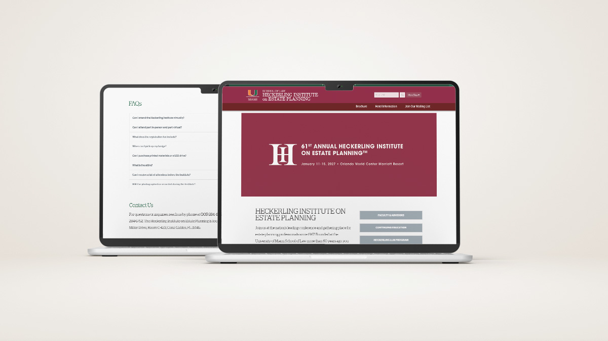
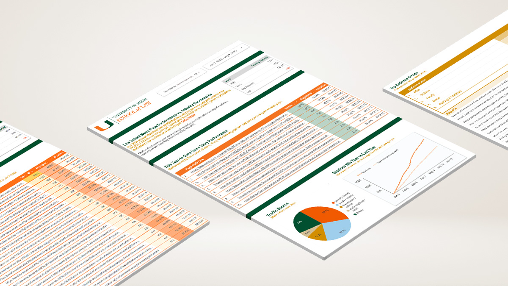
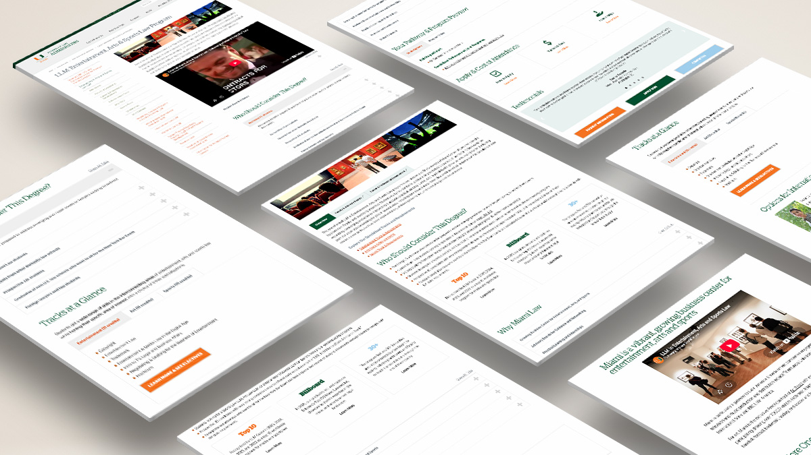
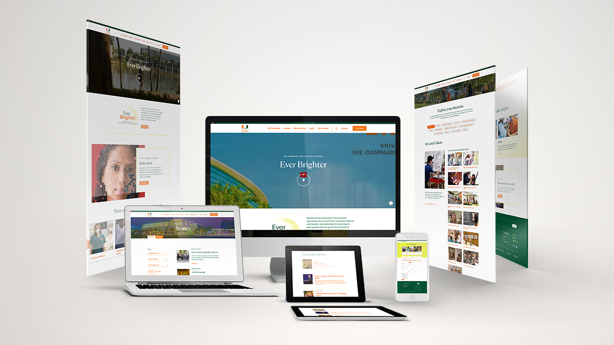
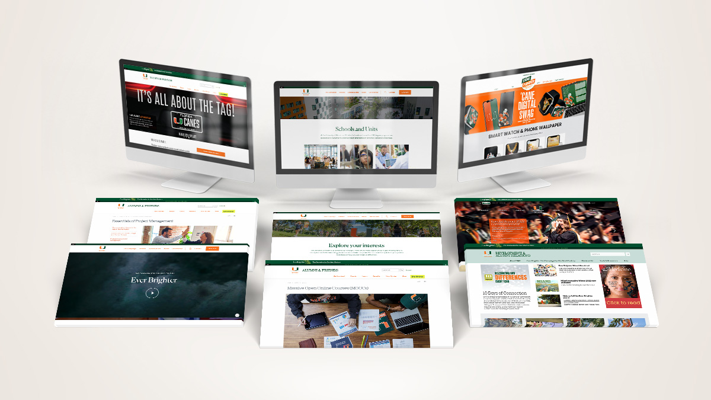
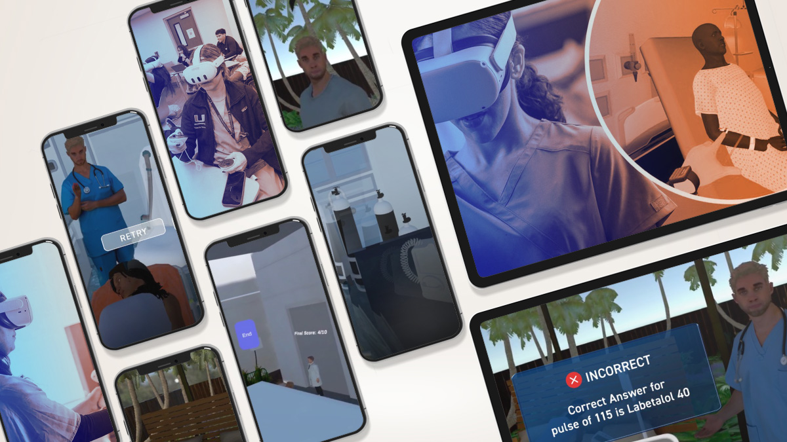
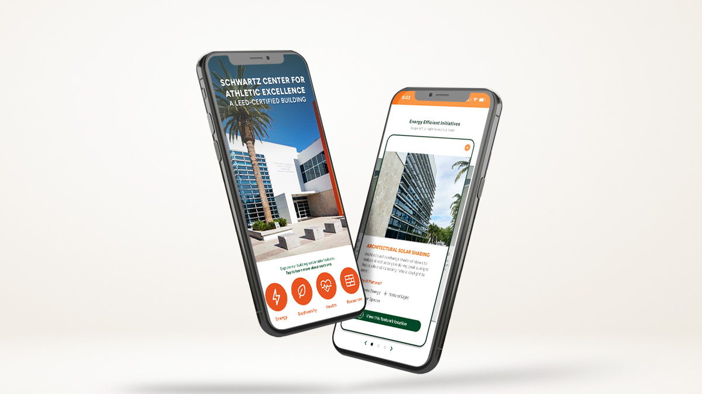

Digital Strategy & Analytics Leader Turning Complexity Into Clarity
More About Me ProjectsAbout
K-drama and anime enthusiast, with a soft spot for bird watching and growing tomato plants. Wife and mom of two, endlessly curious about how people find their way through complicated systems, online and off.
I lead the strategy behind how people find, use, and act on digital content, and how we measure whether it's working. At the University of Miami School of Law, I set the multi-year digital roadmap aligned to the Dean's priorities, and connect information architecture, analytics, SEO/AEO, and content governance into one practice. I've raised site health from 48 to 89, built the reporting that teams across the school use to track their own performance, and am leading the consolidation of four web properties into one. Bilingual in English and Spanish.
Resume
Nearly a decade leading digital strategy, analytics, and information architecture at the University of Miami.
2024 – Present
2022 – 2024
2018 – 2022
2017 – 2018
2016 – 2017
2026
GPA 3.8 · Outstanding Graduate Student Award
Centered on information architecture and digital design.
2024
2024
2018
GPA 3.8, Magna Cum Laude
Portfolio
Work across digital strategy, analytics, information architecture, and UX research, with the decisions and results behind each.
When MLS blog traffic from Google fell 35%, I compared it against other blogs, the program pages, and the whole site to isolate the cause and pinpoint when it started, while confirming leads still rose 47%. The findings reshaped the agency's content plan from 8 new posts a month to 2 data-chosen rewrites.

Restructured the Heckerling Institute site into a registration funnel, using GA4 path data that showed visitors already treated the homepage as their hub. Since the August launch, visitors rose 26%, clicks on key links rose 89%, and site searches fell by a third.

Built the School of Law’s reporting from the ground up: 19 Looker Studio dashboards, UTM standards across programs, tracking on newsletters that had none, a live CMS page inventory, and a Qualtrics request intake, so every team can see its own performance.

A content and navigation restructure across 44 LLM program pages that lifted key events 15.4% and sessions 9.4%, even during a slower admissions cycle.
Leading the consolidation of four School of Law web properties onto a single domain, including content inventory, redirect mapping, and phased migration sequencing, to preserve SEO authority and keep the school visible in AI answer engines. In progress.

UX research and information architecture for the digital presence of the University of Miami's $2.5B centennial campaign: stakeholder interviews, competitive benchmarking, and a content taxonomy built around three donor-interest themes.

Restructured a one-size-fits-all alumni site into a persona-driven architecture with four audience journeys and an eight-category navigation, rebuilding templates and URLs in Cascade. Pageviews grew 57% and organic search ranking rose 23%.

Led usability research for a real client's voice-based VR paramedic training simulation. Moderated testing using the System Usability Scale and VRNQ, resulting in 25 severity-rated issues and actionable design recommendations.

Competitive audit, benchmark research, personas, and low-fidelity wireframes for a sustainability-focused digital experience. XiD coursework.
I'd love to talk about how strategy, structure, and data can help your team's digital work perform.